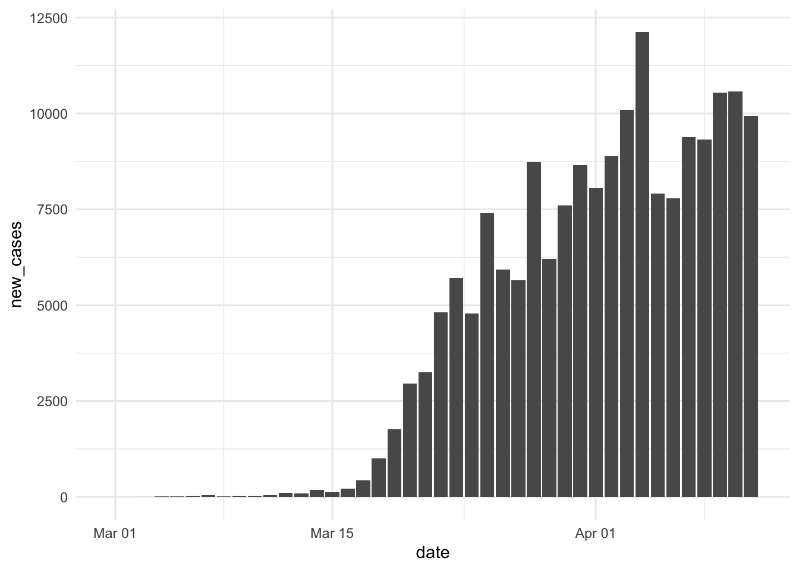
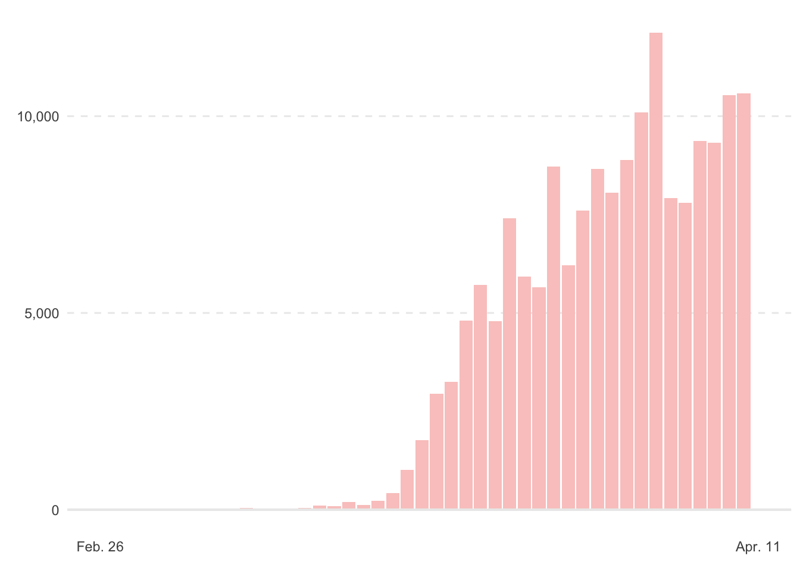
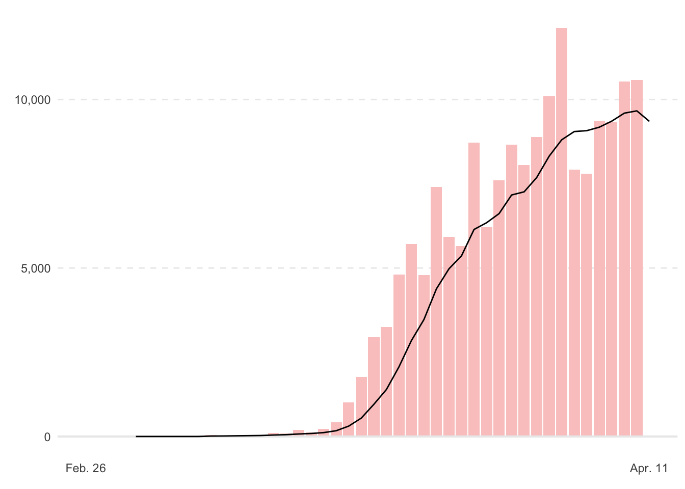
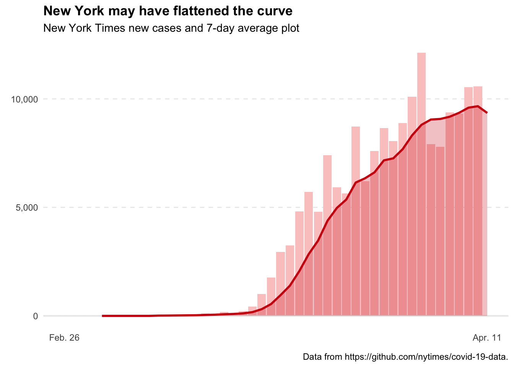
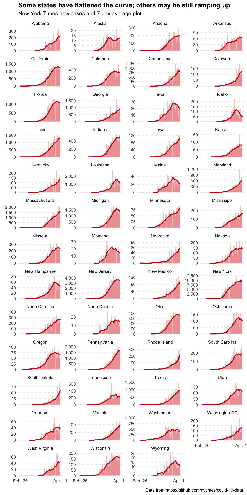

The New York Times has produced some really great maps and plots in its efforts to track the coronavirus in the U.S. One plot in particular that caught my attention is the histogram (actually more like a bar plot) of new cases with a 7-day average line overlayed found at the top of this page.
Why not try to replicate this? I would also like to try to facet this plot out with all 50 states.
Making the histogram (bar plot)
Making the histogram of new cases shouldn’t be too difficult. I am going to use New York as my first state. Conveniently enough, The New York Times has a Github site where we can download the state-level data that creates the maps and plots on their site. I’ll also use geom_col because each bar is just one day, so there are no bins needed.
library(tidyverse)
library(lubridate)
library(scales)
theme_set(theme_minimal(base_size = 11))covid <- read.csv("https://raw.githubusercontent.com/nytimes/covid-19-data/master/us-states.csv") %>%
as_tibble() %>%
mutate(date = ymd(date),
state = as.character(state))
covid## # A tibble: 2,217 x 5
## date state fips cases deaths
## <date> <chr> <int> <int> <int>
## 1 2020-01-21 Washington 53 1 0
## 2 2020-01-22 Washington 53 1 0
## 3 2020-01-23 Washington 53 1 0
## 4 2020-01-24 Illinois 17 1 0
## 5 2020-01-24 Washington 53 1 0
## 6 2020-01-25 California 6 1 0
## 7 2020-01-25 Illinois 17 1 0
## 8 2020-01-25 Washington 53 1 0
## 9 2020-01-26 Arizona 4 1 0
## 10 2020-01-26 California 6 2 0
## # … with 2,207 more rowsThe data from NYT is cumulative counts of cases and deaths. To get new cases, we will have to remove the previous total from each row using the lag function in dplyr.
covid_processed <- covid %>%
group_by(state) %>%
mutate(new_cases = cases - lag(cases),
new_cases = replace_na(new_cases, 0)) %>%
ungroup()
covid_processed %>%
filter(state == "New York") %>%
ggplot(aes(x = date, y = new_cases)) +
geom_col()
I haven’t done any scaling or labeling, but this looks like the same histogram as the one at the top of the New York state-specific page, so we’re on the right track. Let’s see if I can color, scale, and label it the same way as NYT now.
covid_processed %>%
filter(state == "New York") %>%
ggplot(aes(x = date, y = new_cases)) +
geom_col(fill = "#FAC9C7") +
geom_hline(yintercept = 0, size = 0.75, color = "gray92") +
scale_x_date(limits = date(c("2020-02-26", "2020-04-11")),
breaks = date(c("2020-02-26", "2020-04-11")),
labels = date_format(format = "%b. %d"),
minor_breaks = NULL) +
scale_y_continuous(breaks = c(0, 5000, 10000), minor_breaks = NULL, labels = comma_format()) +
labs(
x = element_blank(),
y = element_blank()
) +
theme(panel.grid.major.x = element_blank(),
panel.grid.major.y = element_line(linetype = "dashed")
) -> p
p
Whew! That was a decent amount of work with scales and grid lines; one hack is that when I set panel.grid.major.y = element_line(linetype = "dashed"), the 0 line was dashed as well, whereas I wanted a solid line at 0. To remedy this, I had to place a geom_hline with yintercept = 0 and make it the same color gray as the other grid lines.
7-day average
Okay, now for maybe the hardest part: creating a 7-day average line that is layered over the histogram. First, let’s attempt to compute the 7-day average using rollmean from the zoo package.
library(zoo)
covid_processed <- covid_processed %>%
group_by(state) %>%
mutate(seven_avg = rollmean(new_cases, 7, align = "right", fill = 0)) %>%
ungroup()I’ve set align = "right", which will compute the average from the previous seven days; this appears to be the methodology of NYT, though I’m not entirely sure. I’ve also set fill = 0, so that I get the same vector length as the rest of the data frame, just filling the starting numbers with 0.
Let’s just verify that’s it’s doing what we expect:
covid_processed %>%
filter(state == "New York",
date >= "2020-03-15" & date <= "2020-03-21")## # A tibble: 7 x 7
## date state fips cases deaths new_cases seven_avg
## <date> <chr> <int> <int> <int> <dbl> <dbl>
## 1 2020-03-15 New York 36 732 6 122 89.4
## 2 2020-03-16 New York 36 950 10 218 115.
## 3 2020-03-17 New York 36 1374 17 424 172.
## 4 2020-03-18 New York 36 2382 27 1008 309.
## 5 2020-03-19 New York 36 4152 30 1770 547.
## 6 2020-03-20 New York 36 7102 57 2950 954.
## 7 2020-03-21 New York 36 10356 80 3254 1392.covid_processed %>%
filter(state == "New York",
date >= "2020-03-15" & date <= "2020-03-21") %>%
summarize(seven_avg = sum(new_cases) / n())## # A tibble: 1 x 1
## seven_avg
## <dbl>
## 1 1392.Yep, when I do it by hand for one date (Mar. 21), I get the same result: 1,392.
Let’s just update the data for the plot p and add the line to compare to the NYT plot:
p$data <- covid_processed %>%
filter(state == "New York")
p +
geom_line(aes(y = seven_avg))
Nice! Okay, now let’s doctor that line up to look like the NYT plot. Here, rather than add to the ggplot object, p, I’m going to rebuild the entire plot. However, it can be helpful sometimes when working on a plot to save a portion of it, and continue to build on it. Furthermore, since it’s a list object, we can edit elements of the list, like I did to update the data above.
covid_processed %>%
filter(state == "New York") %>%
ggplot(aes(x = date, y = new_cases)) +
geom_col(fill = "#FAC9C7") +
geom_hline(yintercept = 0, size = 0.75, color = "gray92") +
geom_line(aes(y = seven_avg), color = "#CF1010", size = 1) +
geom_area(aes(y = seven_avg), fill = "#CF1010", alpha = 0.25) +
scale_x_date(limits = date(c("2020-02-26", "2020-04-11")),
breaks = date(c("2020-02-26", "2020-04-11")),
labels = date_format(format = "%b. %d"),
minor_breaks = NULL) +
scale_y_continuous(breaks = c(0, 5000, 10000), minor_breaks = NULL, labels = comma_format()) +
labs(
title = "New York may have flattened the curve",
subtitle = "New York Times new cases and 7-day average plot",
x = element_blank(),
y = element_blank(),
caption = "Data from https://github.com/nytimes/covid-19-data."
) +
theme(plot.title = element_text(face = "bold"),
panel.grid.major.x = element_blank(),
panel.grid.major.y = element_line(linetype = "dashed"),
legend.position = "none"
)
Faceting all 50 states
Okay, the last thing I want to do is facet this out by state.
covid_processed %>%
filter(fips <= 56) %>% # just the 50 states + DC.
mutate(state = case_when(state == "District of Columbia" ~ "Washington DC", TRUE ~ state)) %>%
ggplot(aes(x = date, y = new_cases)) +
geom_histogram(stat = "identity", fill = "#FAC9C7") +
geom_hline(yintercept = 0, size = 0.75, color = "gray92") +
geom_line(aes(y = seven_avg), color = "#CF1010", size = 1) +
geom_area(aes(y = seven_avg), fill = "#CF1010", alpha = 0.25) +
scale_x_date(limits = date(c("2020-02-26", "2020-04-11")),
breaks = date(c("2020-02-26", "2020-04-11")),
labels = date_format(format = "%b. %d"),
minor_breaks = NULL) +
scale_y_continuous(minor_breaks = NULL, labels = comma_format(accuracy = 1)) + # removed the hard-coded breaks.
facet_wrap(~state, scales = "free_y", ncol = 4) +
labs(
title = "Some states have flattened the curve, others may still be ramping up",
subtitle = "New York Times new cases and 7-day average plot",
x = element_blank(),
y = element_blank(),
caption = "Data from https://github.com/nytimes/covid-19-data."
) +
theme(plot.title = element_text(face = "bold"),
panel.grid.major.x = element_blank(),
panel.grid.major.y = element_line(linetype = "dashed"),
legend.position = "none"
)
I hope this tutorial was helpful; I feel the best way to get better at ggplot2 is to find plots on the internet I like, and try to recreate them in R.
Lastly, I want to say happy Easter to you all. During this time, it can be difficult to find hope, but in the story of Jesus we find a message of light in the midst of darkness.